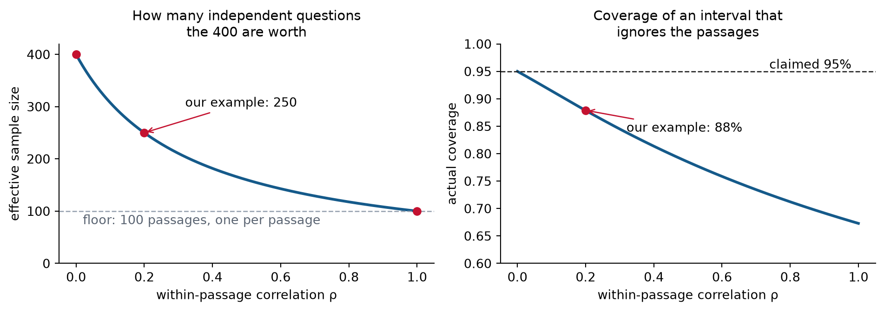
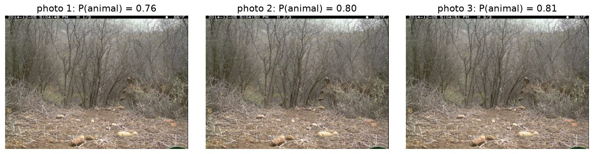
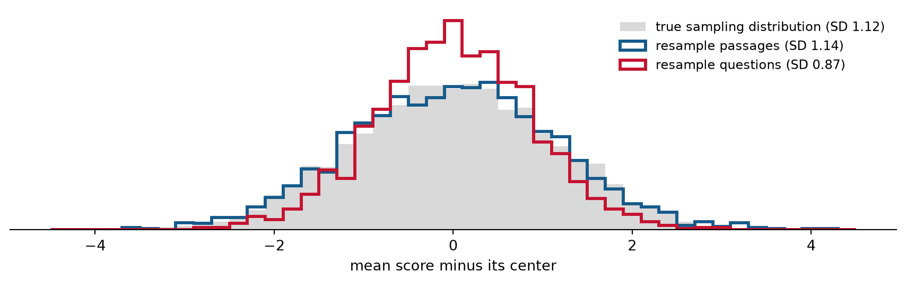

Lecture bridge and guided lab
Today: what happens when they are not.
| Benchmark | One scored item | Cluster |
|---|---|---|
| Camera traps | one photo | the burst of three photos, and the camera |
| Reading comprehension (for example, SQuAD) | one question | the passage it asks about |
| Instruction following (project track) | one instruction check | the prompt |
| Human preferences (project track) | one judgment | the response pair, and the Reddit post |
Items in the same cluster tend to be easy or hard together. A hard passage makes all its questions harder, and a hidden animal is hidden in all three photos.

One burst from the wildlife team’s cameras: the same half-hidden deer, one second apart.
A reading benchmark has G passages with m questions each. A grader scores each answer from 0 to 100; call the score Y.
What is the average score of a randomly chosen question?
Average within a passage first, then across passages: E[Y] = E\bigl[E[Y \mid \mu_g]\bigr] = E[\mu_g] = \mu. This is the law of iterated expectations.
A score varies because answers vary within a passage, and because passages differ.
The law of total variance adds the two parts: \operatorname{Var}(Y) = \underbrace{E\bigl[\operatorname{Var}(Y \mid \mu_g)\bigr]}_{\text{within a passage: } \sigma^2} + \underbrace{\operatorname{Var}\bigl(E[Y \mid \mu_g]\bigr)}_{\text{between passages: } \tau^2} = \sigma^2 + \tau^2.
If \sigma = 16 and \tau = 8, then \operatorname{Var}(Y) = 256 + 64 = 320. One fifth of the variance comes from which passage the question is about.
Given the passage, yes. But the passage itself is random.
Split the covariance the same way, with the law of total covariance from Week 2:
\operatorname{Cov}(Y_1, Y_2) = \underbrace{E\bigl[\operatorname{Cov}(Y_1, Y_2 \mid \mu_g)\bigr]}_{\text{within a passage: } 0} + \underbrace{\operatorname{Cov}(\mu_g,\, \mu_g)}_{\tau^2} = \tau^2.
Both scores rise and fall with the passage’s difficulty. Their correlation is the share of the variance that comes from the passage, \rho = \frac{\tau^2}{\sigma^2 + \tau^2} = \frac{64}{320} = 0.2.
For the total of m = 2 scores from one passage:
\operatorname{Var}(Y_1 + Y_2) = \operatorname{Var}(Y_1) + \operatorname{Var}(Y_2) + 2\operatorname{Cov}(Y_1, Y_2) = 2(\sigma^2 + \tau^2) + 2\tau^2.
The 2\tau^2 is extra variance that an independence assumption ignores. With \sigma = 16 and \tau = 8, that is 640 + 128 = 768 instead of 640, or 20% more.
With m items per cluster and n items in all, the mean score \bar Y has
\operatorname{Var}(\bar Y) = \frac{\sigma^2 + \tau^2}{n}\,\bigl[1 + (m-1)\rho\bigr].
Worked example: 100 passages with 4 questions each and \rho = 0.2. The design effect is 1 + 3(0.2) = 1.6, so 400 questions carry about as much information as 250 independent ones. An interval that ignores this and claims 95% actually covers about 88% of the time.
The same design effect applies to an accuracy. In HW4 you derive it for camera-trap photos.

At \rho = 0 the 400 questions are independent. At \rho = 1 every question about a passage gets the same score, so the benchmark holds only 100 pieces of information, one per passage. With more questions per passage, the same \rho costs even more. With m = 20 and \rho = 0.1, the design effect is 2.9.
The interval on the last slide misses because its standard error pretends the 400 questions are independent. The bootstrap estimates the sampling distribution by resampling the data the same way they were sampled. The benchmark sampled passages, and each passage brought its questions with it.

Resampling whole passages reproduces the spread of the true sampling distribution. Resampling single questions is too narrow, the same mistake as the naive interval.
Resampling whole clusters keeps the “easy or hard together” pattern in every bootstrap sample.
Estimating the design effect from data: divide the bootstrap variance by s^2/n, the variance if the questions were independent (s^2 is the sample variance of the scores). For example, if the bootstrap variance is 1.28 and s^2/n = 320/400 = 0.80, the design effect is 1.6. With m = 4, solving 1 + 3\rho = 1.6 gives \hat\rho = 0.2.
On [population], the estimated [quantity] was [estimate] ([interval type] 95% CI [limits]). [The main limitation, in plain words.]
For the reading benchmark:
On questions about these 100 passages, the estimated mean score was 72 (passage-bootstrap 95% CI 70 to 74). All 100 passages come from one encyclopedia.
For the wildlife team, every interval describes photos from these cameras. A new camera is outside that population.
The team wants its 95% interval for accuracy, which is near 0.9, to reach no more than 3 points on either side: z\sqrt{\frac{p(1-p)}{n}} \le 0.03.
With independent photos, solving for n gives n \ge \frac{z^2\,p(1-p)}{0.03^2} = \frac{3.84 \times 0.09}{0.0009} \approx 385.
With bursts of three photos and \rho = 0.4, the design effect is 1 + 2(0.4) = 1.8. Each photo is worth only 1/1.8 of an independent one, so the team needs 1.8 times as many, about 690 photos, or 230 sequences.
| Track | One scored item | Clusters? |
|---|---|---|
| Food tagging | one image | No. Nothing links images, so treat them as independent. |
| Pet tagging | one image | No, same as Food. |
| Human preferences | one judge verdict | Yes, if you judge each pair in both orders, since the two verdicts share a pair. A few pairs also come from the same Reddit post. |
| Instruction following | one instruction check | Yes. Each response gets several checks, and each prompt has several responses. |
For Food and Pets, today’s other lessons matter more. Per-class and per-breed counts are small, so those intervals are wide, and cat-or-dog accuracy is near 1, where Wald fails.
Before computing an interval, ask what was sampled. If items share a source, resample the source.
You will end with the result you would report to the wildlife team.
Do Problem 1 first. Problems 2 and 3 use its results.